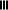

pedigreejs is a JavaScript library used to draw family trees using standard pedigree nomenclature. It uses the JavaScript d3 library to layout the hierarchical structure and draw the individual nodes as a SVG image. The size of the SVG can be configured as well as the colour codes used to denote disease. It can be used to build the pedigree structure or load in an existing data set. To assist visualisation and building of larger pedigrees a full screen mode is provided.
Browser local storage is used to maintain a history of the steps in building a pedigree structure. So that at each step of the pedigree building process it can be undone to return to previous versions.
See the example using the React framework and the developer documentation for more details about setting up pedigreejs.
A demonstration page is available here. Other example pages and configurations are given below:
Individuals can be added to the pedigree by placing the mouse over an individual to reveal the widgets used for editing and adding a partner (two people with at least one child), parents , a sibling , or a child . Options are given to add male , female , unknown , dizygotic (fraternal) twin or monozygotic (identical) twin .
If the 'edit' parameter is set in the configuration of pedigreejs then the widget is also displayed. When this widget is clicked it opens an editor dialog of the attributes associated for the individual. A default editor is provided that can be overridden and customised.
Half siblings can be added by creating a new partner (with ) for the parent in common to the siblings. Consanguineous partners can be created between individual's at the same or different levels in the pedigree tree, e.g. cousins. This is done by placing the mouse over one of the partners and clicking and dragging the triple dashed line widget  in the direction of their new partner.
There are 'undo' , 'redo' and 'reset' buttons at the top and a button to enable full screen editing .
The pedigree can be saved out and loaded back in. Support is given to loading CanRisk files, and PED files (see example 4).
The following parameters can be used to configure pedigreejs. Please also see the developer notes for more details about programmatically interacting with pedigreejs. The important parameter to configure is 'targetDiv' which defines the HTML div used for drawing the pedigree. Default parameters are provided which are documented below. There is a configuration parameter 'edit' which can take a function, so that a customised editor can be written to view and edit an individual's attributes (e.g. name, sex). Alternatively if 'edit' is set to true a default dialog will be displayed showing the individual's attributes.
var opts = {
'targetDiv': 'pedigree',
'btn_target': 'pedigree_history',
'width': 450,
'height': 320,
'symbol_size': 35,
'store_type': 'array',
'diseases': [
{'type': 'breast_cancer', 'colour': '#F68F35'},
{'type': 'ovarian_cancer', 'colour': '#4DAA4D'},
{'type': 'pancreatic_cancer', 'colour': '#4289BA'},
{'type': 'prostate_cancer', 'colour': '#D5494A'}],
labels: ['age', 'yob'],
font_size: '.75em',
font_family: 'Helvetica',
font_weight: 700,
'DEBUG': (pedigree_util.urlParam('debug') === null ? false : true)
};
var local_dataset = pedcache.current(opts);
if (local_dataset !== undefined && local_dataset !== null) {
opts.dataset = local_dataset;
} else {
opts.dataset = dataset;
}
opts= ptree.build(opts);
[ {"name": "m21", "sex": "M", "top_level": true},
{"name": "f21", "sex": "F", "top_level": true},
{"name": "ch1", "sex": "F", "mother": "f21", "father": "m21", "breast_cancer": true, "proband": true}]
[{'type': 'breast_cancer', 'colour': '#F68F35'},
{'type': 'breast_cancer2', 'colour': 'pink'},
{'type': 'ovarian_cancer', 'colour': '#4DAA4D'},
{'type': 'pancreatic_cancer', 'colour': '#4289BA'},
{'type': 'prostate_cancer', 'colour': '#D5494A'}]
pedigreejs: a web-based graphical pedigree editor
Carver T, Cunningham AP, Babb de Villiers C, Lee A, Hartley S, Tischkowitz M, et al.
Bioinformatics
doi:10.1093/bioinformatics/btx705